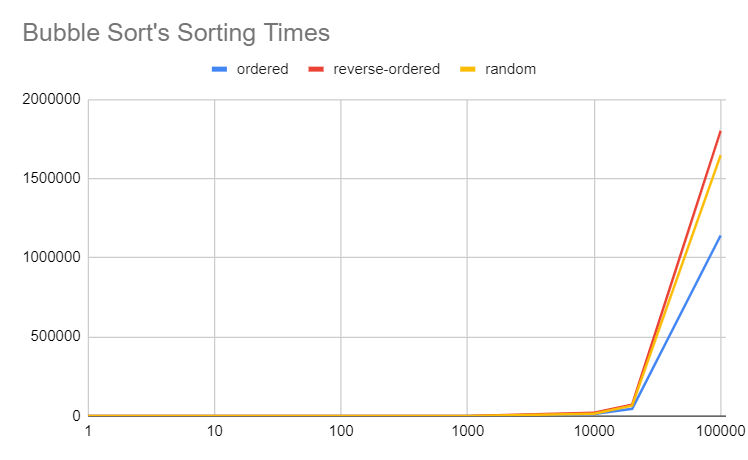
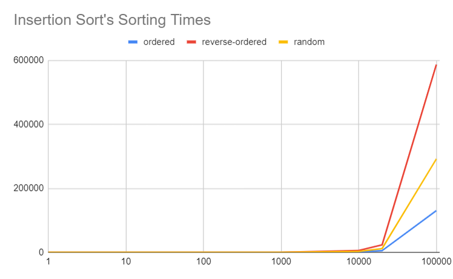
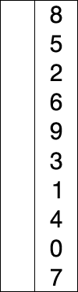
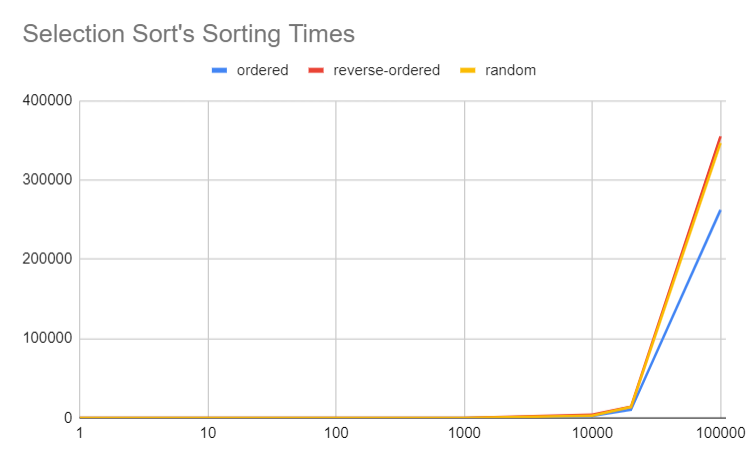

Optimal Sort
Group Members: Gautam Narayan, Jakob McPherson, Lilly Seeley, Daniel Joung
GitHub Repository Google Sheet (includes both the full sheet and the summary sheet)Flowchart showing the process behind our sorting algorithm

Sort Analysis
Bubble Sort RepositoryInsertion Sort Repository
Selection Sort Repository
Sort Analysis Google Sheet (includes both the full sheet and the summary sheet)
The three graphs below compare the speed of Bubble Sort, Insertion Sort, and Selection Sort when sorting ordered, reverse-ordered, and random text files. Each line represents the sorting times for a single file type. In all three graphs, the x-axis logarithmically displays the number of words sorted, and the y-axis linearly indicates the average number of milliseconds to execute the sort.
The graphs indicate that all three algorithms can sort files of 1000 words or less very quickly, but the time taken significantly increases from 1000 to 10000 words and from 10000 words to 20000 words. Also, all three graphs show that sorting the ordered file is the quickest, followed by the random and reverse-ordered files.
The graphs provide for these three sorting algorithms working in quadratic time complexity. For example, in each chart, it takes about 10^2=100 times longer to sort a file of size 10000 than a file of size 1000.
I extrapolated to find the time taken to sort the files of size 100000. Because, on average, these algorithms sort in O(n^2) time, it would take too long to sort files larger than 50000 words. The shell will crash if the algorithm runs too long on a single file. Therefore, I used the quadratic time complexity to calculate how quickly each algorithm would sort files of size 100000.
Bubble Sort
Although its time complexity is still O(n^2), Bubble Sort is still the slowest of the sorting algorithms tested. The time needed to sort files of length 1000 and below is negligible, but sorting files of length 10000 takes about 15 seconds.
Bubble Sort traverses an array, comparing consecutive terms. Nothing is done if the pair's second term is larger than the first. If the second term is smaller, however, the pair is swapped. After the comparison and possible swap, Selection Sort inspects the next pair (the second term in the original pair will be the first term in the new pair). This process repeats until Selection Sort checks the last pair in the array. Then, the entire array is traversed repeatedly until every pair is correctly ordered (meaning every second term is larger than every first term). If every pair is correctly ordered, the entire array must be ordered, and the algorithm will stop.
Below is an animation showing how Bubble Sort sorts an array of integers.

If the array is of size n, there are n elements in the array. Each element is likely to be swapped at least n/4 times, meaning that at least n^2/8 swaps are likely to be executed. Therefore, on average, Bubble Sort’s time complexity is O(n^2).

Insertion Sort
Insertion Sort’s time complexity is also O(n^2), but it is significantly faster than Bubble Sort. For example, files of length 10000 take about 2-6 seconds. Like Bubble Sort, though, Selection Sort quickly sorts files of length 1000 and below. Interestingly, Insertion Sort has the most variation between the time taken to sort the ordered array and the reverse-ordered array.
Insertion Sort successively takes later elements and inserts them into a sorted subarray at the beginning of the array. Insertion Sort begins by making the first element in the array into a subarray. Because this subarray is simply a single element, it is already sorted. Then, Insertion Sort inspects the element immediately after the sorted subarray, comparing it with the single element in the subarray to determine whether to place the new element before or after the element in the subarray. This process is repeated to continually increase the size of the sorted subarray until the sorted subarray becomes the whole array. At that point, the array is sorted.
Below is an animation showing how Insertion Sort sorts an array of integers.

If the array is of size n, there are n elements in the array. Therefore, Insertion Sort will need to create n sorted subarrays before the sorted subarray is the same length as the entire array. In each step, the next element after the subarray will need to be compared to all elements in the subarray to determine its location in the new subarray. On average, n/4 of these comparisons will need to be done, meanings that Selection Sort will make about n^2/4 comparisons. As a result, Insertion Sort’s time complexity is O(n^2).

Selection Sort
Selection Sort’s time complexity is, again, O(n^2). It is about as fast as Insertion Sort on average, but the difference in sorting time between the ordered and reverse-ordered case is much lower for Selection Sort than for Insertion Sort.
Selection Sort successively finds the smallest element after a sorted subarray, then adds that element to the end of the subarray. Selection Sort starts by finding the smallest element in the array and swapping that element with the first element. Then, Selection Sort finds the smallest element after that first element and swaps that element with the second element in the array. Then, the first two elements comprise a sorted subarray consisting of the two smallest elements in the array. Selection Sort continues until the subarray is equal to the entire array, at which point the array is sorted.
Below is an animation showing how Selection Sort sorts an array of integers.

If the array is of size n, there are n elements in the array. Therefore, n subarrays must be found before the subarray becomes the entire array. To find each subarray, an average of n/2 elements after the subarray will need to be inspected to find the smallest element among them. Therefore, Selection sort must check n^2/2 elements to sort the array. Thus, Selection Sort works in O(n^2) time.
